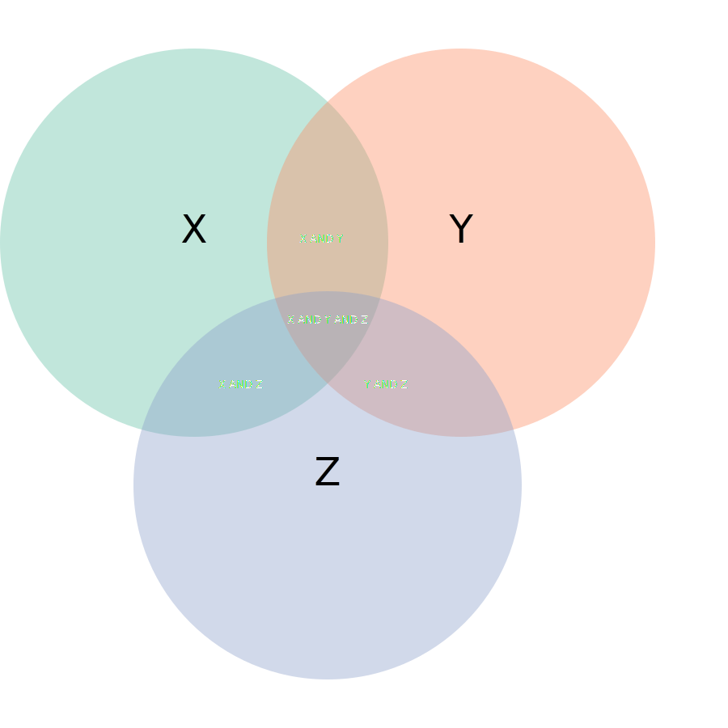
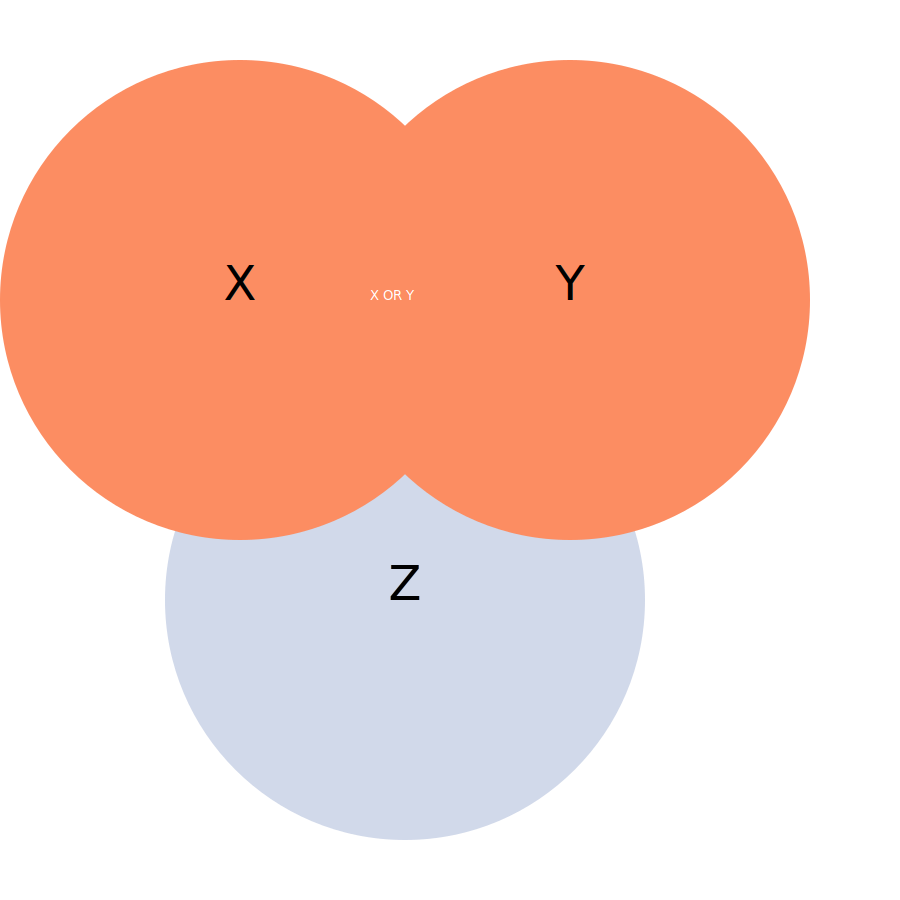
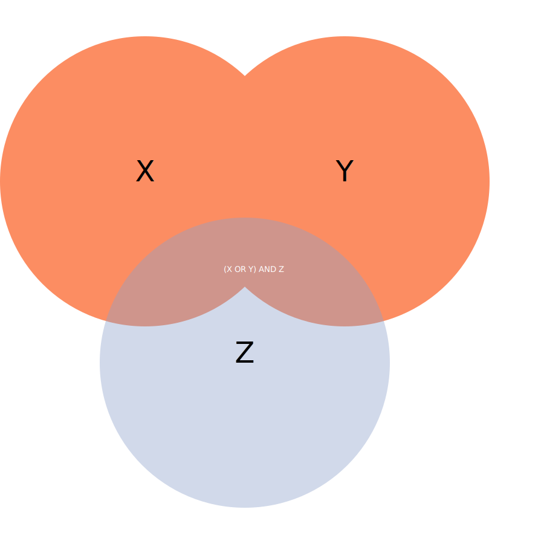

Särskilt om Libris
Eftersom Libris i den här ofta ligger i fokus för övningar i informationssökning (searching) är dess databasstruktur i termer av s k fält av särskild vikt, inte minst för att den avviker från de flesta andra databaser i några avseenden. Det gäller också karaktären på innehållet i Libris och dess struktur - exempelvis förekommer för vissa objekt olika typer av titlar som du vanligen inte finner i andra databaser - t ex originaltitel, parallelltitel och uniform titel. Det här tillägget till Marias och Thomas guide motiveras av Libris och söker belysa vad som är specifikt för sökning i Libris.
När vi nu skriver år 2024 så befinner sig Libris i en utvecklingsfas när det gäller ersättningen av Libris Webbsök med en ny version som ska ta tillvara Libris-databasens nya struktur där bl a en skillnad görs mellan verk och instans. Vad som sägs här är dock i många stycken översättningsbart/generiskt men framöver kan vissa detaljförändringar komma att implementeras i Libris
Innehållet i Libris
Att Libris utgör vår nationalbibliografi (som fram till början av 2000-talet publicerades av Kungliga Biblioteket som "Svensk bokkatalog" och därefter som "Svensk bokförteckning) och därmed förtecknar närapå den totala utgivningen av litteratur i Sverige och på svenska i andra länder inger förstås förtroende. Men det är svårare att dra gränser för vad som eventuellt inte kan finnas där, t ex i fråga om äldre litteratur och vissa typer av litteratur. Här finns flertalet faktorer som påverkar vad vi kan förvänta oss att hitta, bl a en genom åren föränderlig pliktexemplarslag, och att det retrospektiva införlivandet av data från de tryckta utgåvorna nämnda ovan sannolikt är långt ifrån fullständigt.
Att Libris också utgör de vetenskapliga bibliotekens accessions- och beståndskatalog sedan lång tid tillbaka, och numer i viss utsträckning även folkbibliotekens, inger också förtroende, men undertecknad (Mikael) känner inte till fullo vilka luckor som kan finnas. Med accessionskatalog avses här förteckningen av bibliotekens förvärv av utländsk litteratur, vilken tidigare gjordes och publicerades i tryckt form, bl a som "Sveriges offentliga bibliotek - Accessionskatalog" från slutet av 1800-talet.
Det är därmed klart att med avseende på täckningsgrad så finns i och för sig ingen bättre historisk dokumentation över svensk utgivning och universitetsbibliotekens bestånd i Sverige. En sökning efter beskrivningar av litteratur av bärartyp 'bok' ger nära tio miljoner träffar. När det däremot gäller beskrivningarnas (posternas) fullständighetsgrad och granulariteten i fråga om vad som beskrivs ser vi dock en anmärkningsvärd variation som vi behöver vara medvetna om.
Fullständighetsgrad: Dels kan många beskrivningar sakna uppgifter som vi förväntar oss att finna, såsom förlagsuppgifter och uppgifter om författare när det handlar om utgåvor med fler än tre författare. För senare tiders utgivning kan man förvänta sig uppgifter om översättare, originalspråk och originaltitel, men det är mer sällsynt för äldre utgåvor.
Granularitet: I huvudsak förtecknas eller beskrivs inte enskilda häften/nummer som ingår en en tidskrift, eller bidrag i tidskriftsnummer, inte heller verk som ingår i en s k antologi. En sökning efter beskrivningar av litteratur av publikationstypen 'serier' (vilket inkluderar t ex tidskrifter, dagstidningar och rapportserier) ger drygt en halv miljon träffar.
En "tumregel" här kan vara att ju äldre en utgåva är, desto lägre fullständighetsgrad och granularitet kan vi förvänta oss. En faktor att räkna med är också att katalogiseringsregler har förändrats över åren och att enskilda katalogiserande bibliotekarier har haft varierande kompetens och erfarenhet av uppdraget.
Libris förtecknar också litteratur som inte finns tillgänglig på svenska bibliotek. Dels finns förhandsinformation från förlagen som registreras med knapphändig metadata, och dels finns beskrivningar importerade från andra nationalbibliotek som ett led i det internationella bibliografiska samarbetet.
Sökning i Libris
Även om registrering av resursbeskrivningar (katalogisering) i databasen Libris huvudsakligen görs genom Libris XLs formulär- och RDF-baserade struktur så genereras alltid en kopia av vad som matas in, i MARC21-struktur och det är mot den här senare strukturen som sökningar mot databasen Libris sker — i Libris Webbsök.
MARC21 är en komplex företeelse och den visserligen extensiva hjälp som ges för sökning i Libris förutsätter på sätt och vis till en viss del en god kännedom om MARC21, vilket du sannolikt inte har och kan behöva lite hjälp med.
Du når hjälpen via https://libris.kb.se/form_boolean.jsp och särskilt länken betitlad Alla sökkoder innehåller en del väsentlig hjälp för att formulera precisa sökfrågor.
Det ges inte utrymme här för en fullständig genomgång av respektive prefix (sökkod) som kan användas i Libris för att rikta sökningen mot en särskild form av metadata — dvs ett eller flera särskilda fält. Libris hjälp har utöver en specifikation av vilka MARC21-fält som motsvaras av respektive prefix också en prosaisk beskrivning som räcker ganska långt även utan kännedom om MARC21. För prefixet OTIT gäller t ex att det avser originaltitel, men "endast för material utgivet före 2004" (och sannolikt inte att lite på till 100%, se mina kommentarer under 'Innehållet i Libris' nedan). Sökfrågan OTIT:("Män som hatar kvinnor") är alltså inte en bra sökfråga, eftersom verkets första utgåva kom 2005, medan TIT:("Män som hatar kvinnor") ger ett hyggligt resultat med översättningar av Larssons verk.
OTIT:(saison enfer) ger endast en träff på Helmer Långs översättning (av Rimbauds 'en tid i helvetet') utgiven 1953, men missar flera andra översättningar av olika skäl. (Notera att citationstecken saknas i det här exemplet, mot bakgrund av antagandet att de båda strängarna 'saison' och 'enfer' borde vara tillräckligt unika inom ett och samma fält. Oftast är dock citationstecken att förorda, men en osäkerhet kring t ex genus för det franska 'saison' kan motivera det här). Träffarna för TIT:("une saison en enfer") SPRAK:(eng) hittar vi inte med prefixet OTIT trots att det skulle kunna förväntas.
Exemplen här ger förstås en osäkerhet, men syftar till att skapa medvetande om en försiktighet och att prova olika lösningar. I de flesta fall kan det räcka med de prefix som Libris kallar "sammansatt sökkod", dvs t ex TIT och FÖRF, men var alltså observant även på vad de betyder. FÖRF matchar även illustratörer och redaktörer, inte endast författare, om dessa är angivna i adekvata fält. I kursen ingår att du förväntas explorativt undersöka och värdera vilka prefix som kan vara användbara.
Sökspråket följer annars de principer som ges i den här guiden av Maria och Thomas och i undervisningen generellt kring sökspråk. Det är dock två aspekter på vad vi kan kalla teckenhantering som förtjänar att särskilt lyftas fram, eftersom vi vet att de kan missförstås.
Det första gäller att vara varsam med mellanslagen. I många fall ignorerar systemet extra mellanslag.
TIT:("Män som hatar kvinnor") är ekvivalent med TIT:("Män som hatar kvinnor") och TIT:( "Män som hatar kvinnor" )
men
TIT: ("Män som hatar kvinnor") är det inte. Prefixets kolon måste följas direkt av de strängar som eftersöks. Här genererar ett extra mellanslag ett felmeddelande.
Det andra gäller att parenteser har två distinkt olika funktioner i Libris.
TIT:("Män som hatar kvinnor") är helt ekvivalent med TIT:"Män som hatar kvinnor" samt nästan med TIT:Män TIT:som TIT:hatar TIT:kvinnor
Här kan förstås påpekas att konjunktionen 'som' är ganska meningslös.
Parenteser används här som ett förkortat sätt att säga att alla tre strängarna ska återfinnas i titelfälten.
TIT:(Män som hatar kvinnor) är annars helt ekvivalent med TIT:Män TIT:som TIT:hatar TIT:kvinnor, samt TIT:Män AND TIT:som AND TIT:hatar AND TIT:kvinnor
Citationstecknen gör alltså en skillnad, som dock har begränsad betydelse för utfallet här.
AND är underförstått (implicit) för sökfrågor i Libris om en operator saknas, men kan för tydlighets skulle inkluderas.
Annars fungerar parenteser också som ett sätt att gruppera delar av sökfrågan, på det sätt som har beskrivits tidigare i den här guiden, som i
TIT:(saison enfer) AND (SPRAK:swe OR sprak:eng)
för att matcha översättningar till svenska eller engelska. Prova själv med att ta bort den andra parentesen i Libris och se vad som händer.
Den uppmärksamme noterar att resultatet av endast
TIT:(saison enfer)
ger möjligheten att genom gränssnittets högermeny filtrera på språk — men bara på ett språk i taget, så du får göra två sökningar i stället för en som den mer komplexa sökfrågan ovan möjliggör.
(TIT:Män TIT:som TIT:hatar TIT:kvinnor) NOT TIT:("Män som hatar kvinnor")
Logiska kombinationer
Även om innebörden av operatorerna AND och OR förklaras på andra ställen så kan följande illlustrationer i form av Venn-diagram vara till hjälp utan att direkt sägas vara specifika för Libris.
Här måste vi tänka i termer av mängder, dvs vi låter t ex mängden X vara ekvivalent med mängden av alla beskrivningar (poster) som innehåller strängen x, mängden Y vara ekvivalent med mängden av alla beskrivningar (poster) som innehåller strängen y och mängden Z vara ekvivalent med mängden av alla beskrivningar (poster) som innehåller strängen z. Somliga beskrivningar innehåller sannolikt flera av dessa strängar z, y och z. De överlappande ytorna i illustrationen nedan visar storleken på dessa delmängder och vilka sökfrågor som skulle generera dem. Den minsta delmängden träffar får vi alltså med sökfrågan X AND Y AND Z.

Figur 4.1: Logiskt OCH
Den s k unionen av två mängder är resultatet av en logisk disjunktion X OR Y och innefattar de tre mängderna X, Y och X AND Y - det finns alltså ett snitt, en mängd som svarar mot både kriteriet att strängen x ska finnas och samtidigt strängen y. Om det finns 50 beskrivningar som innehåller strängen x och 50 som innehåller strängen y så blir det inte 100 träffar så länge som X AND Y inte är en tom mängd, att det med andra ord inte finns någon beskrivning som innehåller båda strängarna x och y.

Figur 4.2: Logiskt ELLER
För vi däremot in mängden Z i resonemanget igen så ser vi exempel på när parenteser är nödvändiga.

Figur 4.3: Kombination av logiskt OCH och ELLER
X OR Y AND Z ger helt enkelt en annan (mindre) mängd, eftersom det är liktydigt med X OR (Y AND Z) i de flesta system, inklusive Libris.